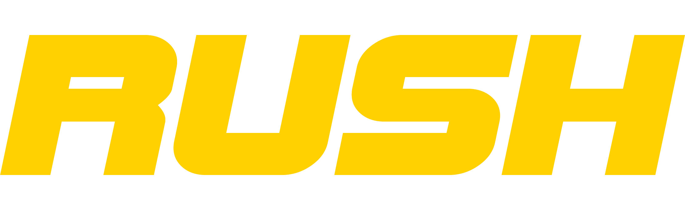

No hay carros en proceso
Ver entregados de hoy
Tipo
Color
Marca
— falta
Línea
— falta
Secadores
— elige de 1 a 4
También pueden secar
Empezar a secar
Cancelar
Entregar
Rechazar
¿Qué le faltó?
Cancelar
← Volver a la cola
Entregados hoy
Código de acceso
Escribe el código que te dieron. Solo se pide esta vez: el teléfono lo recuerda.
Ese código no es correcto
Entrar